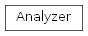
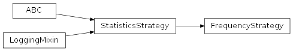
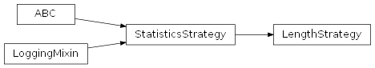
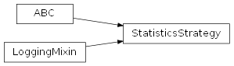

SentimentAnalysis.src.stats package
Subpackages
- SentimentAnalysis.src.stats.visualization package
- Submodules
- SentimentAnalysis.src.stats.visualization.command_line_strategy module
- SentimentAnalysis.src.stats.visualization.diagram module
- diagram.py
DiagramDiagram.COLOR_1Diagram.COLOR_2Diagram.DO_BEEPDiagram.add_thresholds()Diagram.all_multiple_frequencies_by_prompt_diagrams()Diagram.all_pairwise_frequency_comparison_diagrams()Diagram.bar_plot()Diagram.box_plot()Diagram.calculate_zipf_values()Diagram.diagram_beep()Diagram.heatmap()Diagram.heatmap_from_df()Diagram.line_plot()Diagram.multiple_frequencies_by_prompt_diagram()Diagram.multiple_frequencies_by_prompt_subplot()Diagram.pairwise_frequency_comparison_diagram()Diagram.pairwise_frequency_comparison_subplot()Diagram.plot_side_by_side()Diagram.prepare_frequency_dataframe()Diagram.simple_frequency_diagram()Diagram.zipf_frequency_diagram()
- SentimentAnalysis.src.stats.visualization.jupyter_strategy module
- SentimentAnalysis.src.stats.visualization.plotter module
- SentimentAnalysis.src.stats.visualization.plotting_strategy module
- Module contents
Submodules
SentimentAnalysis.src.stats.analyzer module
analyzer.py
Version 1.0, updated on 2025-05-01
- class SentimentAnalysis.src.stats.analyzer.Analyzer(my_strategy: StatisticsStrategy | None = None)[source]
Bases:
objectThis class serves as the context in a strategy pattern, which allows you to dynamically choose a statistics strategy at runtime.
The class works with any of the statistics strategies that implement the StatisticsStrategy interface.
- strategy
The current statistics strategy in use.
- Type:
- __init__(my_strategy: StatisticsStrategy | None = None) None[source]
Constructor.
Sets the statistics strategy which is supposed to be used for statistical analyses.
- Parameters:
my_strategy (StatisticsStrategy | None) – The statistics strategy to be used. Default value: None.
- analyze(items: ItemList)[source]
Analyzes the given items.
- Parameters:
items (ItemList) – ItemList object containing the list of items to be analyzed.
- property strategy: StatisticsStrategy
Gets the current serialization strategy.
- Returns:
The statistics strategy currently in use.
- Return type:
SentimentAnalysis.src.stats.frequency_strategy module
frequency_strategy.py
Version 1.0, updated on 2025-01-27
- class SentimentAnalysis.src.stats.frequency_strategy.FrequencyStrategy(items: ItemList, name: str = '')[source]
Bases:
StatisticsStrategyThis class is a concrete implementation of the StatisticsStrategy interface for statistical analyses. This strategy is used for the analysis of frequencies of given items collected in an ItemList object.
- CATEGORY = 'Frequency'
- __init__(items: ItemList, name: str = '') None[source]
Constructor.
Initializes a new instance of the FrequencyStrategy class with items organized in an ItemList object. .
- compute_item_ids_and_values() None[source]
Computes the item ids and their corresponding frequency values and sets the _item_ids_and_values attribute accordingly.
This method implements the abstract method in the StatisticsStrategy parent class.
Notes
The computed result is not returned, but used to set the item_ids_and_values property of this class.
- compute_items_and_values() None[source]
Computes the items and their corresponding frequency values and sets the _items_and_values attribute accordingly.
This method implements the abstract method in the StatisticsStrategy parent class.
Notes
For compatibility with the other statistics strategies, the Counter object returned from the ‘__count_frequencies’ method is converted to a MyOrderedDict object, preserving the order from the highest to the lowest frequency by using the ‘most_common’ method of the Counter object.
The computed result is not returned, but used to set the items_and_values property of this class.
- to_string() str[source]
Returns a string representation of the object, including various statistics and examples derived from the items.
- Returns:
The string representation of the object.
- Return type:
str
- to_string_showing_ids() str[source]
This method returns a string representation of the object similar to the ‘to_string’ method, but showing item IDs instead of item values.
- Returns:
The string representation of the object.
- Return type:
str
- visualize(ax: Axes = None) None[source]
Visualizes the results of the frequency analysis.
This method uses the basic visualization method provided by the StatisticsStrategy base class to visualize the results in a Pandas DataFrame, and adds a Zipf frequency diagram.
- Parameters:
ax (matplotlib.axes.Axes, optional) – The axes on which to plot the data. If None, plots on the current axes.
SentimentAnalysis.src.stats.labels module
labels.py
Version 1.0, updated on 2024-12-17
SentimentAnalysis.src.stats.length_strategy module
length_strategy.py
Version 1.0, updated on 2024-12-04
- class SentimentAnalysis.src.stats.length_strategy.LengthStrategy(items: ItemList)[source]
Bases:
StatisticsStrategyThis class is a concrete implementation of the StatisticsStrategy interface for statistical analyses. This strategy is used for the analysis of lengths of given items (typically string items) collected in an ItemList object.
- CATEGORY = 'Length'
- compute_item_ids_and_values()[source]
Abstract method to compute the item ids and their corresponding statistical values and set the _item_ids_and_values attribute accordingly.
The way the statistical values are computed depends on the statistical categories and must be defined by the corresponding strategy subclasses.
- compute_items_and_values()[source]
Abstract method to compute the items and their corresponding statistical values and set the _items_and_values attribute accordingly.
The way the statistical values are computed depends on the statistical categories and must be defined by the corresponding strategy subclasses.
SentimentAnalysis.src.stats.statistics_factory module
statistics_factory.py
Version 1.0, updated on 2024-12-04
- SentimentAnalysis.src.stats.statistics_factory._get_statistics_strategy(stat_category: str, items: ItemList) StatisticsStrategy[source]
Dynamically creates and returns an instance of the statistics strategy that corresponds to the specified strategy name.
- Parameters:
stat_category (str) – The statistical category forming the first part of the strategy’s name, e.g. ‘frequency’, ‘count’, ‘length’.
items (ItemList) – The items to analyze with the strategy.
- Return type:
An instance of the specified strategy class.
- SentimentAnalysis.src.stats.statistics_factory.get_analyzer(stat_category: str, items: ItemList | ItemSeries | Series | List) Analyzer[source]
Dynamically creates and returns an instance of the StatisticalAnalyzer class using the statistics strategy corresponding to the specified statistics category.
- Parameters:
stat_category (str) – The statistical category forming the first part of the strategy’s name, e.g. ‘frequency’, ‘count’, ‘length’.
items (ItemList | ItemSeries | Series | List) – The items to analyze with the strategy.
- Returns:
An instance of the StatisticalAnalyzer class that uses the specified statistics strategy.
- Return type:
SentimentAnalysis.src.stats.statistics_strategy module
statistics_strategy.py
Version 1.0, updated on 2025-05-01
- class SentimentAnalysis.src.stats.statistics_strategy.StatisticsStrategy(items: ItemList, stat_category: str, name: str = '')[source]
Bases:
ABC,LoggingMixinThis class serves as an interface within the framework of a strategy pattern. It enables a dynamic change of statistical strategies according to the statistical categories to be analyzed ( e.g. length, frequency, element count) from a collection of items. The class declares common methods used by all supported statistics strategies for the computation, analysis and visualization of statistical data.
- examples_highest_values
A string representation of some of the items having the highest statistical value in the collection. Computed property without setter.
- Type:
str
- examples_lowest_values
A string representation of some of the items having the lowest statistical value in the collection. Computed property without setter.
- Type:
str
- examples_near_means
A string representation of some of the items having statistical values close to the mean of the collection. Computed property without setter.
- Type:
str
- examples_near_median
A string representation of some of the items having statistical values close to the median of the collection. Computed property without setter.
- Type:
str
- highest_value
The highest statistical value in the collection. Computed property without setter.
- Type:
int
- highest_value_ids
A list of item IDs having the highest statistical value. Computed property without setter.
- Type:
List[Any]
- highest_value_items
A list of items having the highest statistical value. Computed property without setter.
- Type:
List[Any]
- item_ids_and_values
A dictionary containing the item IDs and their corresponding statistical values.
- Type:
- item_type
The type of the elements in the item list as a string. Computed property without setter.
- Type:
str
- items_and_values
A dictionary containing the items and their corresponding statistical values.
- Type:
- items_near_means
A dictionary of items having statistical values close to the mean of the collection. Computed property without setter.
- Type:
Dict[DictKeyType, int]
- items_near_median
A dictionary of items having statistical values close to the median of the collection. Computed property without setter.
- Type:
Dict[DictKeyType, int]
- lowest_value
The lowest statistical value in the collection. Computed property without setter.
- Type:
int
- lowest_value_ids
A list of item IDs having the lowest statistical value. Computed property without setter.
- Type:
List[Any]
- lowest_value_items
A list of items having the lowest statistical value. Computed property without setter.
- Type:
List[Any]
- mean_value
The mean of the statistical values in the collection. Computed property without setter.
- Type:
float
- median_value
The median of the statistical values in the collection. Computed property without setter.
- Type:
float
- name
The name of the statistics, used to identify the data row in case the statistics for different data rows are assembled in a common data structure.
- Type:
str
- n_items
The number of items to be analyzed. Computed property without setter.
- Type:
int
- second_highest_value
The second-highest statistical value in the collection. Computed property without setter.
- Type:
int
- second_highest_value_ids
A list of item IDs having the second-highest statistical value. Computed property without setter.
- Type:
List[Any]
- second_highest_value_items
A list of items having the second-highest statistical value. Computed property without setter.
- Type:
List[Any]
- second_lowest_value
The second-lowest statistical value in the collection. Computed property without setter.
- Type:
int
- second_lowest_value_ids
A list of item IDs having the second-lowest statistical value. Computed property without setter.
- Type:
List[Any]
- second_lowest_value_items
A list of items having the second-lowest statistical value. Computed property without setter.
- Type:
List[Any]
- stat_category
The name of the statistical category to be analyzed. It is used to name the column holding the statistical values of the items in the dataframe used to store the statistical data, e.g. ‘Frequency’, ‘Length’, ‘Count’.
- Type:
str
- unique_values
A set containing the unique statistical values in the collection. Computed property without setter.
- Type:
Set[int]
- values
A list of statistical values of all items in the collection. Computed property without setter.
- Type:
List[int]
- get_n_highest_items(n: int) Dict[DictKeyType, Any]:[source]
Gets n items having the highest statistical values in the collection.
- get_n_lowest_items(self, n: int) Dict[DictKeyType, Any]:[source]
Gets n items having the lowest statistical values in the collection.
- to_dataframe() MyDataFrame:[source]
Converts the items and their statistical values into a dataframe.
Abstract Methods
- compute_items_and_values() -> None:
Computes the items and their corresponding statistical values.
- compute_item_ids_and_values() -> None:
Computes the item IDs and their corresponding statistical values.
- to_string() -> str:
Returns a string representation of the strategy.
- to_string_showing_ids() -> str:
Returns a string representation of the strategy showing item IDs instead of item values.
- __init__(items: ItemList, stat_category: str, name: str = '') None[source]
Constructor.
Initializes a new instance of the StatisticsStrategy class with a collection of items and a statistical category.
- Parameters:
items (ItemList) – A collection of items to be analyzed statistically. An ItemList object contains a list of elements, a name identifying the ItemList and some methods to manipulate the list elements and to get some basic characteristics of the list (number of elements, distinct elements).
stat_category (str) – The name of the statistical category to be analyzed.
name (str) – The name of the statistics. Defaults to an empty string. Can be used to identify the data row in case the statistics for different data rows are assembled in a common data structure.
- _require_n_unique_items(n: int) bool[source]
Checks if the number of unique items in the collection is equal to n.
- abstract compute_item_ids_and_values() None[source]
Abstract method to compute the item ids and their corresponding statistical values and set the _item_ids_and_values attribute accordingly.
The way the statistical values are computed depends on the statistical categories and must be defined by the corresponding strategy subclasses.
- abstract compute_items_and_values() None[source]
Abstract method to compute the items and their corresponding statistical values and set the _items_and_values attribute accordingly.
The way the statistical values are computed depends on the statistical categories and must be defined by the corresponding strategy subclasses.
- property examples_highest_values: str
Gets the string representation of some of the items having the highest statistical value in the collection.
Notes
The number of items included in the string representation is restricted by the examples function to the number of MAX_ITEMS set in the ‘NUM’ category of the project settings.
- property examples_lowest_values: str
Gets the string representation of some of the items having the highest statistical value in the collection.
Notes
The number of items included in the string representation is restricted by the examples function to the number of MAX_ITEMS set in the ‘NUM’ category of the project settings.
- property examples_near_means: str
Gets the string representation of some of the items having statistical values close to the means of the collection.
Notes
The number of items included in the string representation is restricted by the examples function to the number of MAX_ITEMS set in the ‘NUM’ category of the project settings.
- property examples_near_median: str
Gets the string representation of some of the items having statistical values close to the median of the collection.
Notes
The number of items included in the string representation is restricted by the examples function to the number of MAX_ITEMS set in the ‘NUM’ category of the project settings.
- get(item: Any, default: int = 0) int[source]
Returns the statistical value for the given item.
- Parameters:
item (Any) – The item for which the statistical value is requested.
default (int) – The default value to return if the item is not found in the collection. Defaults to 0.
- Returns:
The statistical value for the given item. Equals to the specified default value if the item is not in the collection.
- Return type:
int
Notes
The possible statistical categories being frequency, length or count, the statistical values are all supposed to be integers.
This method aims at providing a safe way to query statistical values by returning a default value when the requested item is not present, thus avoiding KeyErrors.
The caller can specify a different default value if 0 is not suitable for their context.
- get_n_highest_items(n: int) Dict[str | int | None, Any][source]
Gets n items having the highest statistical values in the collection.
- get_n_lowest_items(n: int) Dict[str | int | None, Any][source]
Gets n items having the lowest statistical values in the collection.
- property highest_value: int
Returns the highest statistical value in the collection.
- property highest_value_ids: List[Any]
Gets the ids of the items having the highest statistical value.
- property highest_value_items: List[Any]
Gets the items having the highest statistical value.
- property ids_near_means: Dict[str | int | None, int]
Gets the ids of the items having statistical values close to the means of the collection.
- property ids_near_median: Dict[str | int | None, int]
Gets the ids of the items having statistical values close to the median of the collection.
- property item_ids_and_values: MyOrderedDict
Gets the item ids and their corresponding statistical values.
- property item_type: str
Gets the type of the elements in the item list as a string.
- property items: ItemList
Returns the collection of items to be analyzed.
- Returns:
The collection of items to be analyzed.
- Return type:
- property items_and_values: MyOrderedDict
Gets the items and their corresponding statistical values.
- property items_near_means: Dict[str | int | None, int]
Gets items having statistical values close to the means of the collection.
- property items_near_median: Dict[str | int | None, int]
Gets items having statistical values close to the median of the collection.
- property lowest_value: int
Returns the lowest statistical value in the collection.
- property lowest_value_ids: List[Any]
Gets the ids of the items having the lowest statistical value.
- property lowest_value_items: List[Any]
Gets the items having the lowest statistical value.
- property mean_value: float
Returns the mean of the statistical values in the collection.
- property median_value: float
Returns the median of the statistical values in the collection.
- property n_items: int
Gets the number of items.
- property name: str
Returns the name of the statistics.
Used to identify the data row in case the statistics for different data rows are assembled in a common data structure.
- property second_highest_value: int
Returns the second-highest statistical value in the collection.
Notes
This method distinguishes between small and big datasets to delegate the task of finding the second-highest value in the collection to the corresponding method that is optimized for this task and the given size of data.
- property second_highest_value_ids: List[Any]
Gets the ids of the items having the second-highest statistical value.
- property second_highest_value_items: List[Any]
Gets the items having the second-highest statistical value.
- property second_lowest_value: int
Returns the second-lowest statistical value in the collection.
Notes
This method distinguishes between small and big datasets to delegate the task of finding the second-lowest value in the collection to the corresponding method that is optimized for this task and the given size of data.
- property second_lowest_value_ids: List[Any]
Gets the ids of the items having the second-lowest statistical value.
- property second_lowest_value_items: List[Any]
Gets the items having the second-lowest statistical value.
- property stat_category: str
Gets the name of the statistical category to be analyzed.
- to_dataframe() MyDataFrame[source]
Converts the items and their statistical values into a dataframe.
- Returns:
The dataframe containing the items and statistical values, wrapped in a MyDataFrame object.
- Return type:
- abstract to_string() str[source]
Composes a detailed string representation of the strategy.
- Returns:
A string describing the strategy.
- Return type:
str
- abstract to_string_showing_ids() str[source]
Composes a string representation of the strategy showing item IDs instead of item values.
- Returns:
The string representation of the strategy.
- Return type:
str
- property unique_values: Set[int]
Returns the unique statistical values in the collection.
- property values: List[int]
Gets the list of statistical values of all items in the collection.
- visualize(ax: Axes | None = None) None[source]
Visualizes the data statistics.
Provides a basic visualization of the statistical data by printing a DataFrame summary leveraging DataFrame properties and functions:
- shape
Displays the number of rows and columns in the DataFrame.
- describe
Provides descriptive statistics such as mean, median, and others for columns containing numerical data.
- head
Prints the first 5 rows of the DataFrame.
- tail
Prints the last 5 rows of the DataFrame.
- Parameters:
ax (plt.Axes) – The axes on which to plot the data. Needed by some of the concrete statistics strategies. Defaults to None.
Notes
Where appropriate, strategy subclasses will extend this method by adding individual diagrams, e.g. a Zipf frequency diagram showing the frequency distribution of the data.